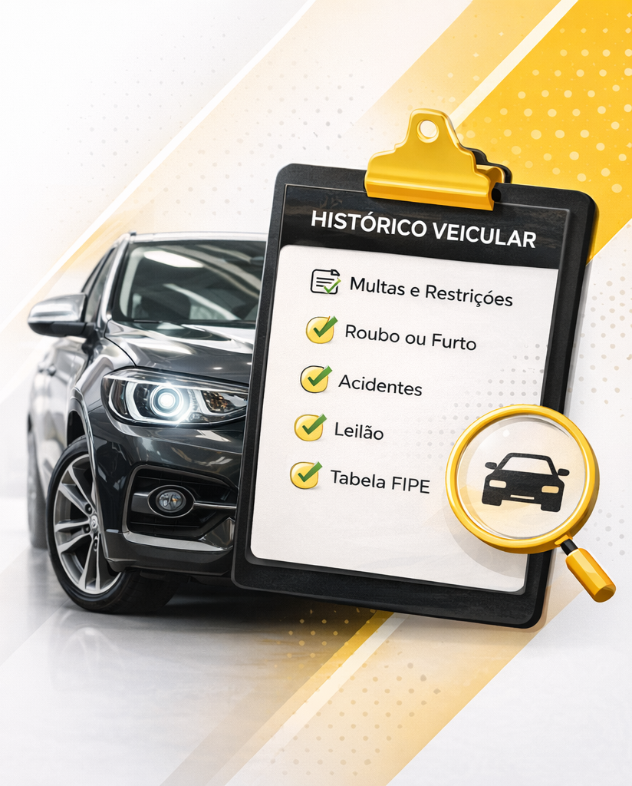
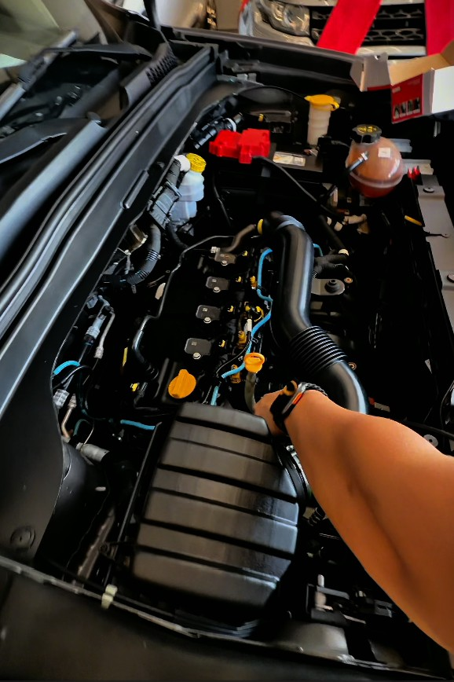
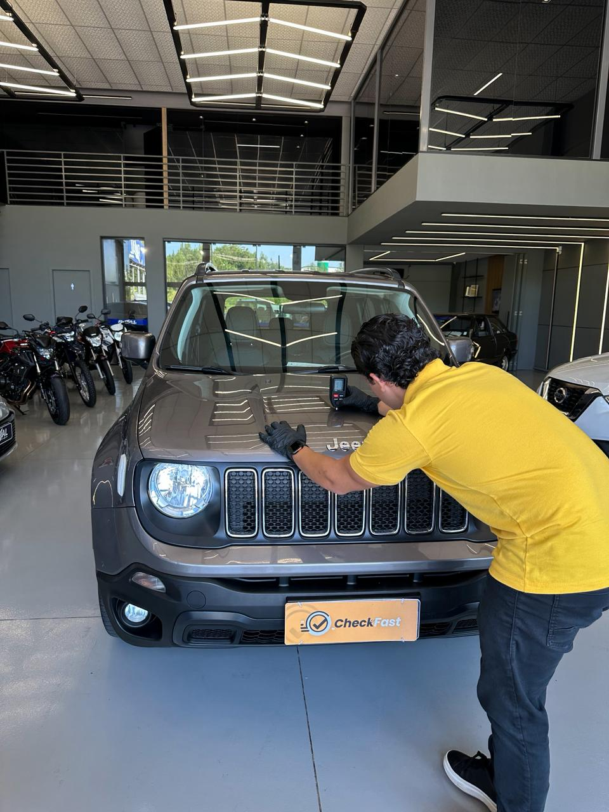

Porto Alegre
A CheckFast ajuda você a comprar ou vender um veículo com muito mais segurança. Com consultas completas e vistorias especializadas, oferecemos informações claras e confiáveis para evitar surpresas e trazer mais tranquilidade para cada negociação.
A Consulta de Histórico Veicular reúne dados essenciais sobre o passado do veículo: multas, restrições, registro de roubo ou furto, passagem por leilão, possíveis acidentes, alienação e valor na Tabela FIPE. É o primeiro passo para avaliar riscos e comprar com mais segurança.

A Vistoria Cautelar Básica vai além do histórico e analisa a identificação e estrutura do veículo. São verificados chassi, motor, vidros, airbags, freios e indícios de sinistros, leilões ou restrições, gerando um laudo fotográfico que aumenta a segurança na compra ou venda.

A Vistoria Cautelar Completa inclui tudo da vistoria básica e acrescenta análise detalhada da pintura e da carroceria. O processo identifica retoques, repinturas ou reparos estruturais, oferecendo um diagnóstico mais profundo e máxima transparência na negociação do veículo.

Aqui você não compra um carro no escuro. Você toma decisão com informação.
Você evita cair em golpes, comprar carro com problema oculto ou assumir prejuízos que não são seus.
Mostramos o que realmente aconteceu com o veículo — histórico, estrutura e sinais que muita gente tenta esconder.
Atendimento rápido e direto, sem enrolação. Você recebe as informações que precisa pra decidir com confiança.
Vamos até você na região de Porto Alegre e arredores, facilitando todo o processo.
Uma vistoria preventiva garante uma decisão mais segura hoje e evita prejuízos futuros.
Equipe técnica preparada para identificar detalhes que passam despercebidos por quem não é da área.
Descubra problemas ocultos e negocie com segurança
Leva menos de 30 segundos. Nossa equipe te chama no WhatsApp.